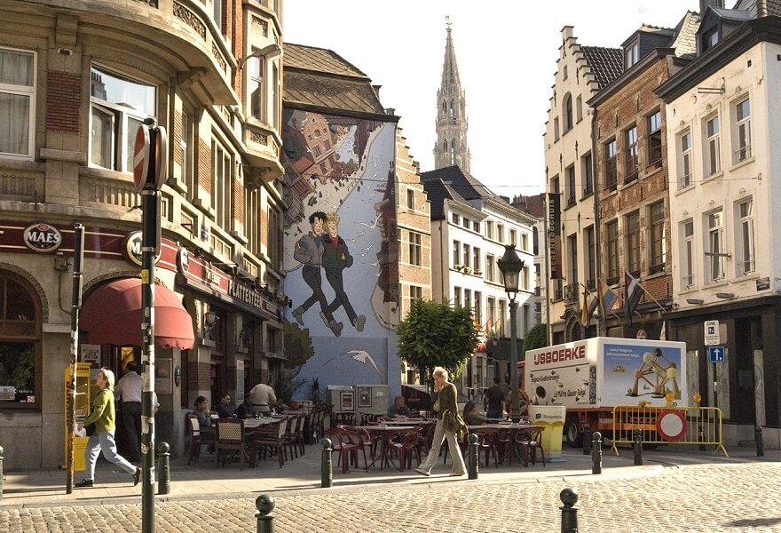

Les Débuts...
Séminaire de Sherbrooke
J'ai grandi à Sherbrooke. Enfant plutôt discret, on me trouvait plus souvent un crayon à la main qu'au centre de l'attention. Ma grande passion? La bande dessinée.
À mon arrivée au glorieux Séminaire de Sherbrooke, personne ne semblait vraiment remarquer le petit gars tranquille que j'étais. Puis j'ai commencé à publier des caricatures dans le journal étudiant, L'Observateur. Mes professeurs y découvraient des versions d'eux-mêmes... parfois un peu moins flatteuses que dans le miroir! Mes dessins, mon humour un brin irrévérencieux et quelques caricatures particulièrement mordantes ont rapidement fait connaître mon nom. Comme quoi, il suffit parfois d'un crayon bien aiguisé pour sortir de l'anonymat.
Bruxelles
Le crayon avant les pixels
Niveau suivant : explorer les mondes de la création. Arrivé à Bruxelles, je pensais partir à l'aventure… mais l'aventure a pris un chemin différent.
L'École Saint-Luc m'a appris que la bande dessinée ne se limitait pas aux cases et aux bulles : elle puisait sa richesse dans la peinture, le cinéma, la photographie, le théâtre et la littérature. Cette période est devenue un grand laboratoire de découvertes où j'ai développé ma créativité et ma curiosité.
En cherchant à mieux comprendre les personnages que je créais, je me suis naturellement intéressé aux personnes réelles, à travers la psychologie et les langues. Bruxelles m'a surtout appris une chose : pour comprendre le monde, il faut d'abord être curieux de ceux qui l'habitent.

Citoyen du Monde.
Turquie, Italie, Chine...
Niveau suivant : devenir un citoyen du monde. Chaque nouveau pays était un défi : repartir de zéro, trouver un logement, décrocher rapidement un emploi comme professeur de langues et me construire une nouvelle vie.
Mon objectif n'a jamais été de visiter un pays, mais de m'y intégrer jusqu'à m'y sentir chez moi. J'apprenais la langue, les habitudes, les codes et les petites subtilités qui transforment un étranger en voisin. À force de recommencer l'exercice, j'ai appris à m'adapter, à créer des liens rapidement et à trouver ma place en terrain inconnu. Enseigner les langues m'a surtout permis de mieux comprendre les gens.
Derrière les différences culturelles, j'ai découvert que nous partageons tous les mêmes besoins, les mêmes espoirs... et souvent le même sens de l'humour.